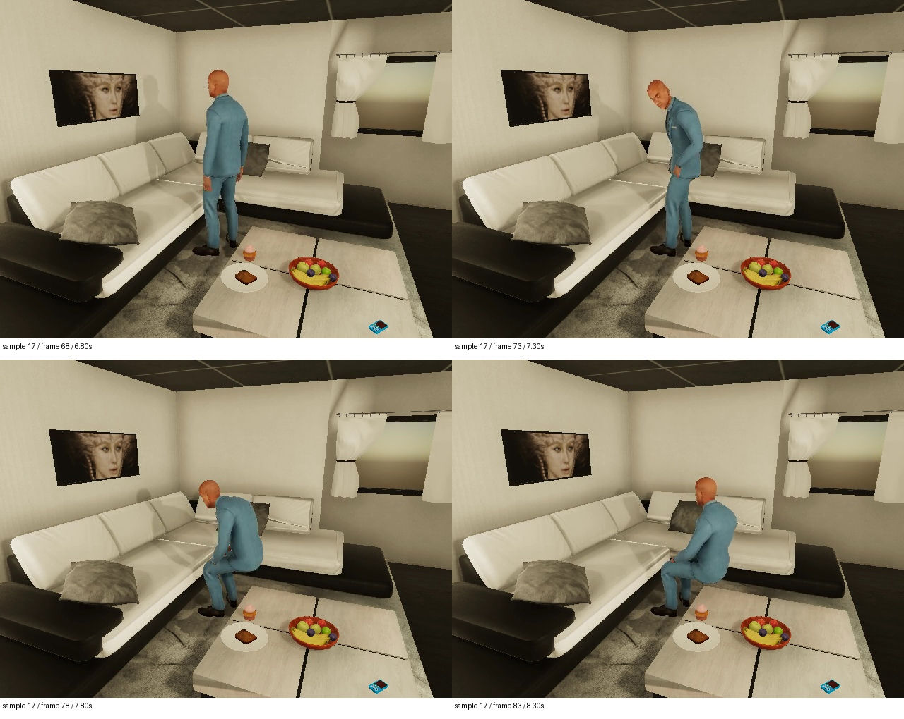
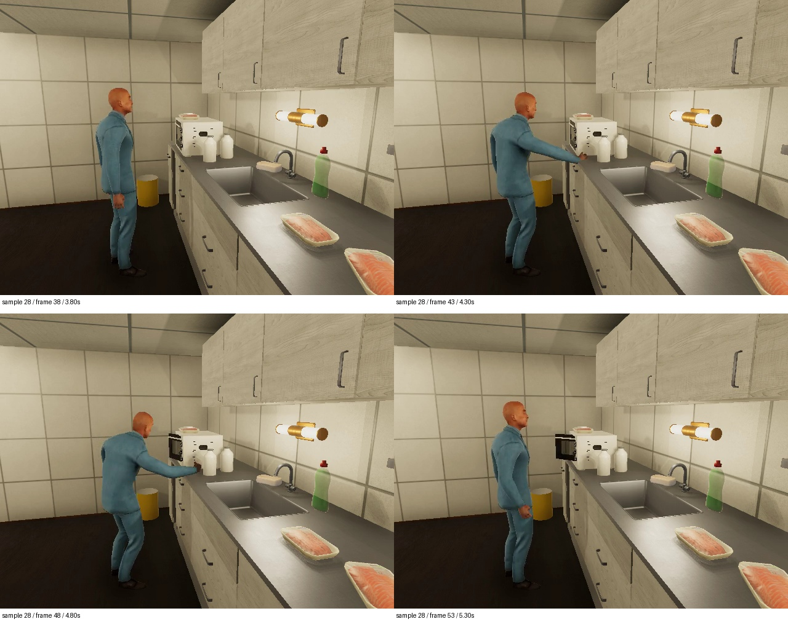
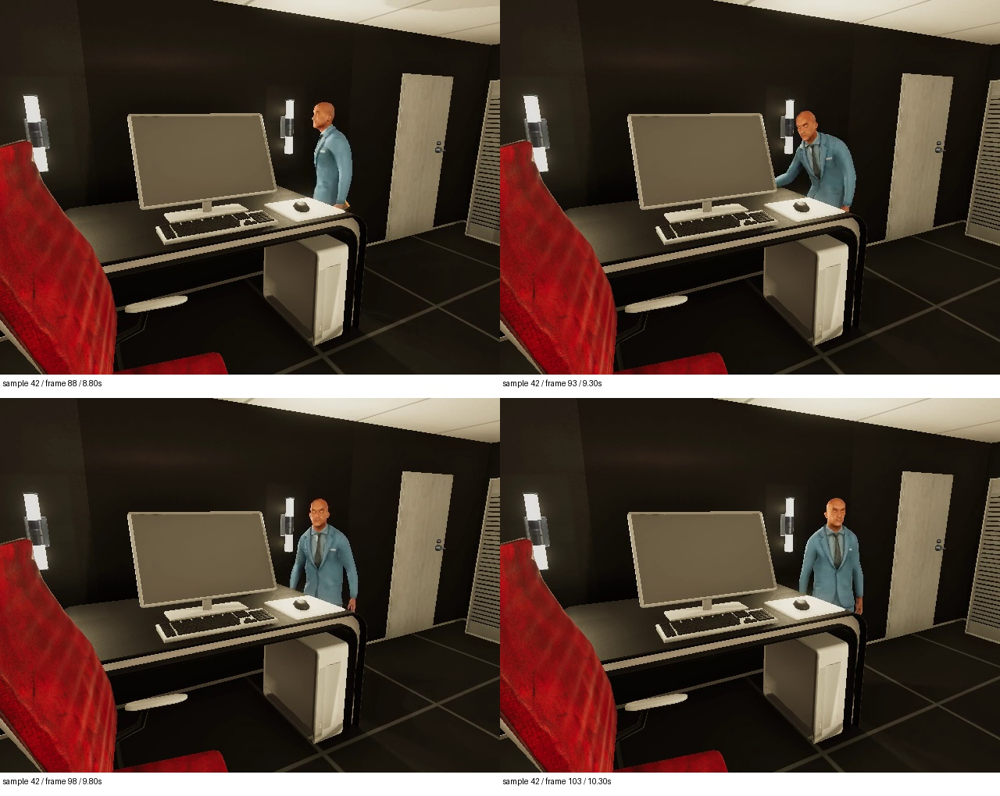
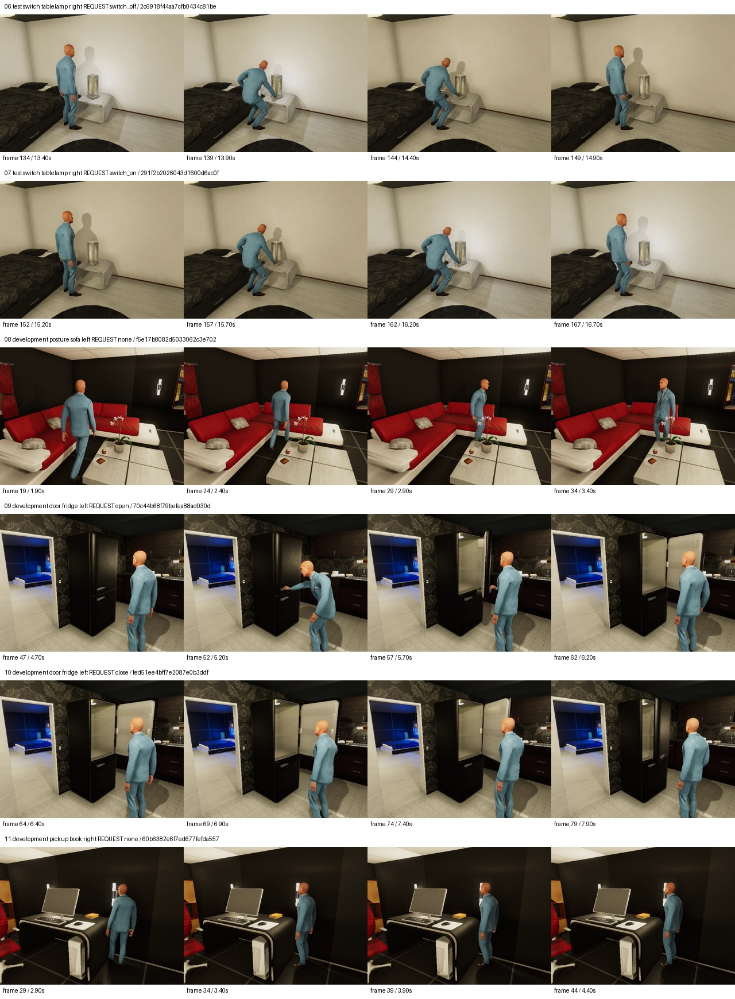

Action discrimination: measured failures
48 AIST/VirtualHome trajectories · 72 original windows · 62 eligible reviews · three isolated feature spaces
Test support: 17/24 windows, six of nine classes. No eligible test closing or switching examples. These results do not establish general action understanding.
| Representation | Test accuracy | Balanced accuracy | Control false actions | Direction | Retrieval Success@5 |
|---|
| native_fp32 | 0.059 | 0.021 | 7/8 | 0.556 | 0.667 |
| pooled_4bit | 0.412 | 0.146 | 1/8 | 0.556 | 0.333 |
| pooled_fp32 | 0.000 | 0.000 | 8/8 | 0.556 | 0.333 |
Source evidence and frozen predictions
Examples selected after evaluation; no query or threshold retuning. No opposite-action margin changed sign under reversal, despite changed native vectors.
Sample 17: visible / sit
Corrected fixed window shows upright posture, descent, and seated endpoint; confirmed on four native-resolution source frames.
Source 6.75–8.75s · train · f40a86c5a5efbfba44613e63
native_fp32: switch_on; gap 0.00844; accepted False; space 2610572d944abb10b0366c2b00aaf87e701b6f6bb6656b022eca66dd230edecd
pooled_fp32: switch_on; gap 0.00216; accepted False; space 7732efae621109f23838a0f94b2e3009ca9eca936c44f84ba99ae71a15eebeba
pooled_4bit: none; gap 0.00190; accepted False; space 9246fa13a4a2d32fbb78ba1614024d65bb44339b757497bf0e90cdd6f07a0bf4

Image: sample-17.jpg. Multi-row sheets retain surrounding examples for context.
Sample 28: partial / open
Microwave door projects outward after the reach; small target viewed obliquely.
Source 3.80–5.80s · test · 6bdb83ebb2c78f5b56230f62
native_fp32: switch_on; gap 0.02269; accepted True; space 2610572d944abb10b0366c2b00aaf87e701b6f6bb6656b022eca66dd230edecd
pooled_fp32: switch_on; gap 0.01466; accepted True; space 7732efae621109f23838a0f94b2e3009ca9eca936c44f84ba99ae71a15eebeba
pooled_4bit: switch_off; gap 0.00080; accepted False; space 9246fa13a4a2d32fbb78ba1614024d65bb44339b757497bf0e90cdd6f07a0bf4

Image: sample-28.jpg. Multi-row sheets retain surrounding examples for context.
Sample 42: unobservable / None
Monitor conceals the book transfer and final desktop position; reach alone cannot establish putdown.
Source 8.80–10.80s · development · 8a6316023a08794b3d02fddb
native_fp32: stand; gap 0.00827; accepted False; space 2610572d944abb10b0366c2b00aaf87e701b6f6bb6656b022eca66dd230edecd
pooled_fp32: switch_on; gap 0.00121; accepted False; space 7732efae621109f23838a0f94b2e3009ca9eca936c44f84ba99ae71a15eebeba
pooled_4bit: sit; gap 0.01894; accepted False; space 9246fa13a4a2d32fbb78ba1614024d65bb44339b757497bf0e90cdd6f07a0bf4

Image: sample-42.jpg. Multi-row sheets retain surrounding examples for context.
Sample 6: unobservable / None
Hand reaches toward the table lamp, but sampled RGB does not establish an on/off state change or its direction.
Source 13.40–15.40s · test · 2c6918f44aa7cfb0434c81be
native_fp32: switch_on; gap 0.01643; accepted False; space 2610572d944abb10b0366c2b00aaf87e701b6f6bb6656b022eca66dd230edecd
pooled_fp32: switch_on; gap 0.00555; accepted False; space 7732efae621109f23838a0f94b2e3009ca9eca936c44f84ba99ae71a15eebeba
pooled_4bit: none; gap 0.06499; accepted True; space 9246fa13a4a2d32fbb78ba1614024d65bb44339b757497bf0e90cdd6f07a0bf4

Image: actions-source-01.jpg. Multi-row sheets retain surrounding examples for context.
Sample 8: visible / none
Actor approaches, turns or waits; sampled evidence shows no target manipulation.
Source 1.90–3.90s · development · f5e17b8082d5033062c3e702
native_fp32: switch_on; gap 0.00828; accepted False; space 2610572d944abb10b0366c2b00aaf87e701b6f6bb6656b022eca66dd230edecd
pooled_fp32: switch_off; gap 0.00560; accepted False; space 7732efae621109f23838a0f94b2e3009ca9eca936c44f84ba99ae71a15eebeba
pooled_4bit: none; gap 0.01209; accepted False; space 9246fa13a4a2d32fbb78ba1614024d65bb44339b757497bf0e90cdd6f07a0bf4
Image: actions-source-01.jpg. Multi-row sheets retain surrounding examples for context.